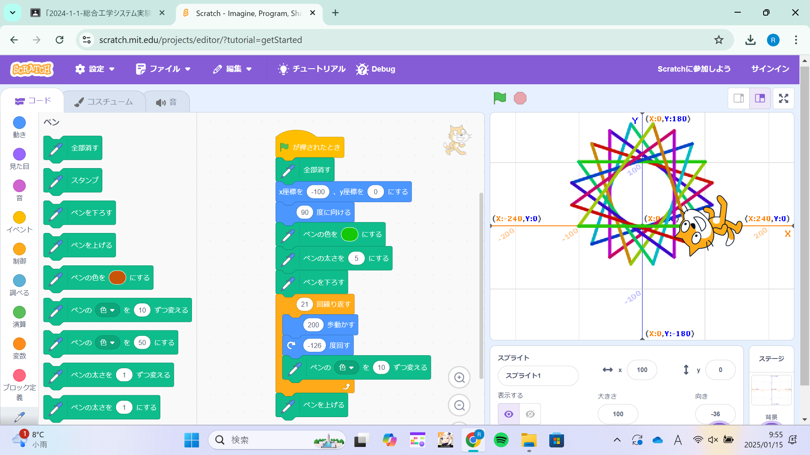
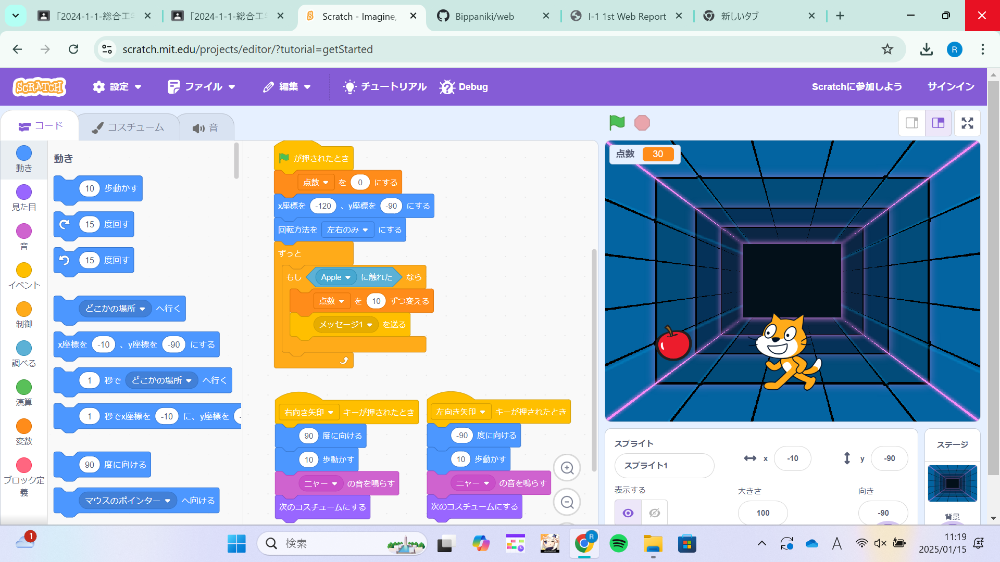

1週目のレポート ： 公大高専１年実習I-1
1b班28番 BIppaniki
第1週目
1-1 サイエンスアート

1.内容
スクラッチを使って線を書くプログラムを作成した。 スプライトを動かし、ペンを使って図形を作成した。
2.感想
向きや進む長さなどの調整が難しかった。
1-2 ゲーム

1.内容
スプライトとリンゴを使ってリンゴ取りゲームを作成した。 スプライトを横移動させリンゴと触れたときにリンゴの表示を消すものだ。
2.感想
ベーシックなものは苦労しなくて済んだが発展させることが難しく、できなかった。
1-3 ホームページ作成
私のホームページ
1.内容
githubを使い自分だけのホームページを作成した。
2.感想
一つ目や二つ目と違い難しい操作が多くついていくのが難しかった。 レポートもこれで提出と思うと気が重たくなる。
各ページへのリンク
1週目のレポート
2週目のレポート
3週目のレポート
私のホームページ